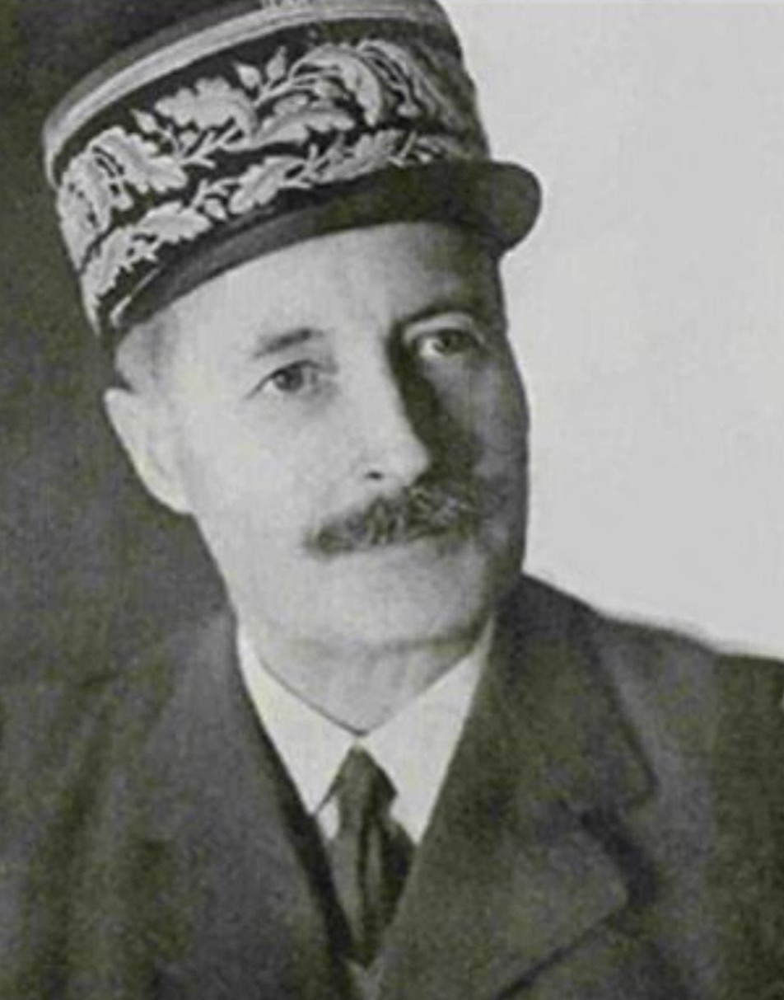

Henri Giraud est l’un des militaires français les plus complexes de la Seconde Guerre mondiale. Général prestigieux, héros de la Grande Guerre, il se retrouve successivement proche de Pétain, opposant à l’armistice, prisonnier des Allemands, chef militaire en Afrique du Nord, puis rival direct de Charles de Gaulle. Son parcours illustre les tensions internes de la France combattante entre 1940 et 1944.
Nom : Henri Honoré Giraud
Dates : 18 janvier 1879 – 11 mars 1949
Nationalité : Française
Fonction : Général • Chef militaire en Afrique du Nord • Co-président du CFLN
Avant 1940, Giraud respecte profondément le maréchal Philippe Pétain, héros de Verdun et figure majeure de l’armée française. Comme beaucoup d’officiers de sa génération, il voit en Pétain un chef militaire légitime.
Lorsque Pétain accepte l’armistice en juin 1940, Giraud s’y oppose fermement. Il refuse la capitulation et demande de poursuivre la lutte contre l’Allemagne. Cette rupture marque le début d’un désaccord profond entre les deux hommes.
Le régime de Vichy considère Giraud comme trop indépendant et potentiellement dangereux. Il est arrêté par les Allemands, avec l’accord tacite de Vichy, puis emprisonné au fort de Königstein. Son évasion en 1942 marque sa rupture définitive avec Pétain.
Giraud entretient des relations difficiles avec Charles de Gaulle. Les deux hommes sont patriotes et hostiles à la collaboration, mais leur vision de la France Libre est radicalement différente.
Giraud refuse de reconnaître l’autorité politique de De Gaulle, qu’il considère comme trop jeune, trop politique et trop solitaire. De Gaulle, de son côté, voit Giraud comme un général traditionnel, soutenu par les Américains, et trop lié à l’armée d’avant-guerre.
En 1943, les deux hommes sont contraints de travailler ensemble au sein du Comité Français de Libération Nationale (CFLN). Leur coopération est tendue. De Gaulle finit par s’imposer politiquement, tandis que Giraud est progressivement écarté.
Après son évasion spectaculaire, Giraud rejoint l’Afrique du Nord où les Américains le soutiennent comme alternative possible à De Gaulle. Il devient chef militaire, puis chef civil après l’assassinat de François Darlan.
Son autorité reste fragile, contestée par les gaullistes et par les résistants. Malgré son prestige militaire, il ne parvient pas à s’imposer politiquement.
Giraud n’est ni un collaborateur, ni un gaulliste. Il représente une troisième voie : celle d’un militaire indépendant, attaché à l’honneur et à la discipline, mais peu à l’aise dans les jeux politiques.
Son parcours reflète les divisions internes de la France combattante et les rivalités entre militaires, résistants, gaullistes et alliés.